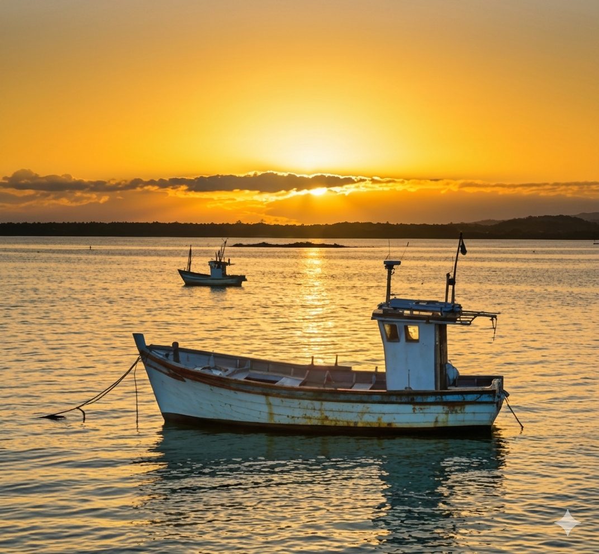
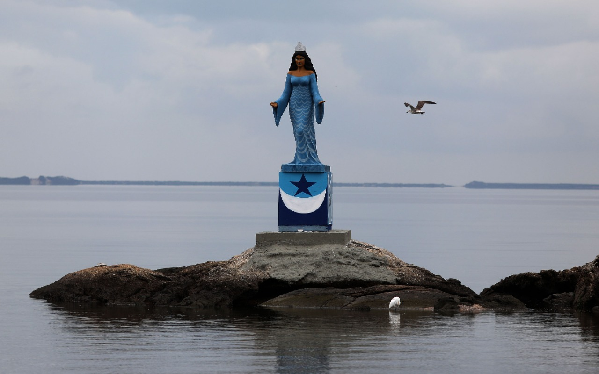

Fundação

Após os desfiles das escolas de samba do Rio de Janeiro em 2013, um grupo de sambistas da Zona Oeste — entre eles Neném Brandão, João Ribeiro e Dinho Santos — se reunia em um bar em Campo Grande para comentar o carnaval daquele ano. Em meio à conversa, surgiu uma provocação de Neném Brandão que marcaria o início de tudo: "Por que não fundamos outra escola de samba na Zona Oeste do Rio de Janeiro? A região é rica em cultura e merece mais representatividade."
A ideia, inicialmente recebida com entusiasmo e descontração, deu origem a discussões sobre nome, identidade, cores e propósito. No entanto, com o passar do tempo, o projeto perdeu força diante das dificuldades naturais de organização e estruturação, permanecendo apenas como um sonho guardado.
Em 19 de março de 2018, a trajetória desse sonho sofreu um duro golpe com o falecimento do idealizador do projeto Neném Brandão, vítima de um infarto. Sua partida interrompeu momentaneamente o avanço da ideia, que permaneceu adormecida por alguns anos.
O projeto foi retomado em junho de 2023, quando João Ribeiro reencontrou Dinho Santos e Vitória Justo. Durante a conversa, a memória de Neném reacendeu o desejo de tirar o plano do papel. O que começou novamente como uma conversa informal rapidamente se transformou em ação. Inicialmente pensado como um bloco carnavalesco, o movimento ganhou força de forma inesperada, impulsionado pelo apoio da comunidade e pela crescente adesão popular.
Diante dessa mobilização, tornou-se evidente que o projeto precisava ir além. Assim, no dia 02 de fevereiro de 2024 — data simbólica por celebrar Iemanjá, figura profundamente ligada à cultura e à identidade de Sepetiba — foi oficialmente fundado o Grêmio Recreativo Escola de Samba União de Sepetiba.
Primeiros Anos

Logo nos primeiros meses, a União de Sepetiba demonstrou uma capacidade de mobilização que superou expectativas. A comunidade abraçou a escola de forma imediata, refletindo-se no crescimento acelerado do número de componentes e no engajamento nas redes sociais, que rapidamente ultrapassaram a marca de dois mil seguidores.
Ainda em fevereiro de 2024, a diretoria promoveu uma ação social na Escola Municipal Eduardo Rabelo, no Cesarão, realizando um bate-papo com crianças e jovens sobre cultura carnavalesca, reforçando desde cedo o compromisso da escola com a formação cultural da comunidade.
No dia 17 de março de 2024, ocorreu um dos primeiros grandes marcos institucionais: a assinatura oficial do estatuto da agremiação, acompanhada do primeiro encontro geral com os componentes. O momento consolidou os laços entre diretoria e comunidade, estabelecendo as bases organizacionais da escola.
Crescimento e Consolidação

Ao longo de 2024, a União de Sepetiba ampliou sua presença no cenário cultural da Zona Oeste, participando de eventos e fortalecendo relações com outras agremiações. Em maio, esteve presente na tradicional feijoada da coirmã Renascer de Jacarepaguá, em um encontro marcado por integração e troca cultural.
O ponto mais simbólico desse período ocorreu em 16 de junho de 2024, com o batismo oficial da escola e a coroação de sua primeira Rainha de Bateria, Andressa Motta. A cerimônia, que contou com a Acadêmicos de Santa Cruz como madrinha, representou a inserção definitiva da União de Sepetiba no cenário carnavalesco, em um evento marcado por emoção e forte conexão com a memória de Neném Brandão.
Nos meses seguintes, a escola manteve uma agenda ativa, participando de eventos de coirmãs e consolidando sua identidade artística. Em novembro, destacou-se a apresentação do primeiro casal de Mestre-Sala e Porta-Bandeira, Myke Amaral e Vitória Pereira, que encantaram o público com o pavilhão azul e branco.
Em dezembro de 2024, a escola realizou o evento Samba D'Zé Quilombo, reforçando sua identidade cultural e seu vínculo com as raízes afro-brasileiras, consolidando-se como uma escola profundamente conectada à sua comunidade.
Atualidade
Após um período de reorganização em 2025, a União de Sepetiba retomou suas atividades com força total, ampliando suas ações culturais e sociais. Entre os destaques, está a realização do evento AfroSamba, que reforçou o compromisso da escola com a valorização da cultura afro-brasileira.
A bateria "Pegada de Marujo", elemento central da identidade da escola, iniciou seus ensaios de rua, fortalecendo a presença da agremiação no território e aproximando ainda mais a comunidade do projeto.
Atualmente, a União de Sepetiba se prepara para seu primeiro desfile oficial, com o enredo "Sabajé", que propõe uma narrativa baseada na fé, na cura e na transformação espiritual. Inspirado em tradições afro-brasileiras, o enredo traduz a força da ancestralidade e da renovação coletiva, elementos que dialogam diretamente com a essência da escola.
Paralelamente, a agremiação mantém parcerias importantes, como o Instituto Social Neném Brandão, o Instituto Social Ampulheta e outras iniciativas comunitárias e esportivas, reforçando seu compromisso com o desenvolvimento social de Sepetiba.
Mesmo com pouco tempo de existência, a União de Sepetiba constrói, passo a passo, uma trajetória baseada em identidade, resistência cultural e pertencimento. Sua história ainda está em formação, mas já carrega a força de um projeto que nasce da comunidade e cresce com ela.